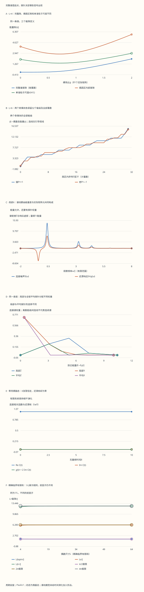

本页目录
基础衔接 06 · Ising 奇偶扇区：从完整能级走到实际探针
先修：二次量子化、量子临界。本讲固定周期边界、偶数个自旋和 Pauli 本征值 ±1，直接矩阵实验只取 L=4、6。先把一个有限系统算完整，再讨论哪些低能尺度可以比较、哪些能级能被指定探针看见。
1. 同一条链，三个“隙”分别回答什么
使用横场 Ising Hamiltonian
每条相邻键计一次。排除 L=2，是因为周期求和此时会把同一对自旋计两遍；那是另一种需要说明的键计数约定。下面的有限矩阵没有使用热力学极限。
定义奇偶算符 \(P=\prod_j\sigma_j^z\)。把全部自旋能级合并、保留重数并排序，完整隙是 \(\Delta_{\rm spin}=E_1-E_0\)；若基态简并，这个定义给零。只在 P=+1 子空间排序，得到偶扇区内部隙 \(\Delta_+=E_{+,1}-E_{+,0}\)。先写出对任意允许动量成立的准粒子色散
本讲选取第三个比较尺度为 \(\epsilon(\pi/L)\)，后文也记作 \(\epsilon_{\pi/L}\)；\(\epsilon_k\) 表示一般动量处的色散值。
完整谱可以跨奇偶扇区取第二个态；固定扇区不允许这样做；一个准粒子又可能改变奇偶。这三个问题的答案当然可以不同。若测量还指定了探针，能级差之外还要多检查一个矩阵元。
2. 直接自旋矩阵是第一份可手算的依据
横场项与 P 对易，一条 XX 键翻转两个自旋，与两次 Z 反对易产生的负号相消，因此 \([H,P]=0\)。在 Z 基底中，令 \(b_j=0,1\) 分别代表本征值 +1、−1，\(n(b)=\sum_jb_j\)，便有
实验用整数的第 j 位保存 \(b_j\)，最低位是格点0；表中的字符串另按格点0到L−1从左到右显示。这样可以直接按表还原每条键，而不必猜哪端是格点0。
偶数个1与奇数个1的基矢分别构成两个维数 \(2^{L-1}\) 的实对称块。L=4时，空基矢的对角元为 −4g，四条跃迁都为 −1；按上述格点显示顺序，目标是1100、0110、0011、1001，仍全部是偶基矢。实验实际逐行构造这两个矩阵，随后对角化；没有拿色散式假装自旋计算结果。
3. 字符串怎样决定周期边界的负号
取 \(\sigma^+=(\sigma^x+i\sigma^y)/2=|0\rangle\langle1|\)，定义 \(S_j=\prod_{\ell<j}\sigma_\ell^z\)、\(c_j=S_j\sigma_j^+\)。于是 \(c_j^\dagger c_j=(1-\sigma_j^z)/2\)，一个1对应一个费米子。对不同格点，把升降算符穿过另一条字符串时恰好多出一个负号，给出 \(\{c_j,c_k\}=0\)、\(\{c_j,c_k^\dagger\}=\delta_{jk}\)。
令 \(A_j=c_j^\dagger+c_j=S_j\sigma_j^x\)、\(B_j=c_j^\dagger-c_j=-iS_j\sigma_j^y\)。内部键用 \(S_{j+1}=S_j\sigma_j^z\)，边界键用 \(S_{L-1}=P\sigma_{L-1}^z\)，分别得到
这里需要两个不同的 Pauli 次序：\(\sigma^y\sigma^z=i\sigma^x\)，而 \(\sigma^z\sigma^y=-i\sigma^x\)。因此
固定 P=p 后，可记作 \(c_L=-p c_0\)。偶扇区使用反周期费米动量，奇扇区使用周期费米动量。 这个 p 是扇区中的数值；在未投影的奇算符表达式里，不能随意移动全局算符 P。
实验从带字符串符号的湮灭/产生作用另外构造 JW 矩阵，与直接自旋矩阵逐行比较；全部格点对的反对易关系也实际检查。边界式必须对每个基矢成立，而不仅对某一个低能态成立。

4. 能量对角化后，仍要筛选物理奇偶
对一对不同的动量 k、−k，选择配对态的相位后，偶占据子空间的矩阵可写成实对称形式
平方矩阵等于 \((a^2+b^2)I\)，所以两条偶态能量是 \(-\epsilon_k,+\epsilon_k\)；两个单占据奇态的能量均为零。一个配对块的四种选择因而是“低能偶态、两个奇态、高能偶态”。把各块组合后，还要把物理奇偶相乘，筛选出指定扇区，才会得到正确的 \(2^{L-1}\) 个自旋能级。
反周期组没有0、π不配对模式，配对真空保持偶性；偶扇区最低允许加入的是一对准粒子，故 \(\Delta_+=2\epsilon_{\pi/L}\)。周期组则另外有
第一个系数穿过g=1时变号，不能先把它取绝对值，再忘掉真空物理奇偶是否改变。g<1时，最低的0模占据是1；g>1时是0，但奇扇区仍要求总奇性。g=1时零模不耗能，可以选择满足约束的占据；零能量没有取消奇偶条件。
实验列出全部模式选择和筛选后的配置，将其全部能量按重数排序，与两份自旋块的完整谱逐项比较。某个最低值碰巧对上，不足以代替这项完整检查。
5. 临界点：相同的尺寸幂次，不同的前因子
默认J=1、g=1、L=4，偶、奇基态能量约为 −5.226251860 和 −4.828427125。偶块第二能量约为 −2.164784401；完整第二能级却来自奇块。因此
在临界点，\(\epsilon_k=4J|\sin(k/2)|\)。令 \(x=\pi/(2L)\)，从等比级数的虚部得到反周期与周期两组有限三角和分别为csc x和cot x。零模按奇性约束占据而不增加能量。
具体地，奇数角求和为 \(\sum_{m=0}^{L-1}\sin((2m+1)x)=\sin^2(Lx)/\sin x\)，偶数角求和为 \(\sum_{m=0}^{L-1}\sin(2mx)=\sin(Lx)\sin((L-1)x)/\sin x\)。代入Lx=π/2即可得到上述两个值，每个模式再贡献负半个准粒子能量。两份真空能及其差因此为
于是 \(L\Delta_{\rm spin}/J\to\pi/2\)，\(L\epsilon_{\pi/L}/J\to2\pi\)，\(L\Delta_+/J\to4\pi\)。它们都按1/L缩小，却不能互换前因子。
尺寸图的L=4到64使用上述精确临界有限和；直接完整矩阵只做L=4、6，图表会明确写出方法。有限和检查具体模型的尺寸关系，两个小矩阵也不能单独建立某个临界普适类。
6. 从能级到信号：把探针真正作用上去
若 \(POP=sO\)、\(s=\pm1\)，在奇偶本征态之间有 \(\langle a|O|b\rangle=s p_a p_b\langle a|O|b\rangle\)。不满足 \(p_a=sp_b\) 的矩阵元只能为零；满足这个条件也只表示允许，仍可能被其他对称性或具体态结构压成零。
实验固定初态为偶扇区基态，比较局部Z、局部X、全链平均Z与平均X。Z保持奇偶，X翻转奇偶；全链平均还保留平移对称性，因此与局部探针的权重分配不同。平均算符定义为 \(L^{-1}\sum_jO_j\)，不是没有归一化的求和。
对于 \(J>0\)、有限g≥0，偶块在基矢图上连通且非对角项非正，可选其唯一基态系数全正。在零场，这个初态是两种x方向完全有序态的偶猫态。它满足局部X平均为零，但两个远处分量的相关可以非零；有限系统的对称猫态与热力学极限的对称破缺不是同一主张。
简并终态的单个本征向量可在子空间内旋转，因此不能把某个数值算法选出的一个向量当作唯一可观测答案。实验把简并子空间内的跃迁强度相加。分组阈值明确为能量除以J后的 \(10^{-10}\)，同时保留组内跨度、重数、完整能级与矩阵残差；它是数值分辨约定，不是改变物理能谱的操作。
7. 连接涨落减去平均值，却不删除全部零频峰
令 \(|v\rangle=(O-\langle O\rangle I)|\psi_0\rangle\)。对每个终态能量子空间的投影 \(\Pi_\alpha\)，定义连接权重 \(w_\alpha=\langle v|\Pi_\alpha|v\rangle\geq0\)。完备性立刻给出
先构造这个连接向量再投影，能明确保留简并态之间的真实涨落。以g=0的偶猫态和局部X为例，X把它送到同能量的奇猫态；平均为零，方差为一，所以C(t)=1。这个零频涨落没有被“连接”一词抹掉。局部Z则创建两个畴壁，代价4J，给出 \(C_Z(t)=e^{-i4Jt}\)。基态间零劈裂与创建缺陷的能量是两个不同量。
固定微扰为−fO、傅里叶约定为正iωt，迟滞核是 \(\chi(t)=-2\theta(t)\operatorname{Im}C(t)\)。用η>0显示谱线时，令 \(d_\alpha=E_\alpha-E_0\)，得到
零能量涨落贡献一个噪声峰，但在两个响应分式中相消；所以“零频噪声很高”不意味着这个封闭态有同样高的对易子响应。η只定义谱线展宽与时间窗，未给封闭自旋系统加入热浴；时间图也没有乘上人为耗散。进一步比较热平衡导数，需要回到谱响应说明态制备和极限次序。
8. 峰高、积分权重与单位要一起检查
每条Lorentz线的全频积分为2π乘其权重；减小η会抬高窄峰，但不改变这个面积。对有限窗口−W到W，实验逐组保留精确面积
没有把窗口外的尾部重新归一化回来。频率图使用可调窗口和3201个采样点；默认ω/J从−2到8，改变频率图上界也按固定比例移动下界，曲线不是所有频率上的实验数据；完整离散谱、每组权重和带宽表保留在账本与下载记录中。
若把能量单位J乘上α，同时保持g、η/J、ω/J、Jt和W/J不变，所有能级、频率与展宽乘α，物理时间除以α，谱密度和频域响应除以α；无量纲权重、相关函数和积分面积不变。实验的J控件采用这一整套换算，不只改坐标标签。
9. 实验：先选择要检验的命题
局域探针的站点滑块展示代表站点0到3。L=6时，站点4、5由周期平移与它们关联；在本讲均匀链和选定的平移本征基态中，局域谱权重相同。完整算符矩阵仍按所选站点构造；平均探针不依赖这个站点选择。
先比较默认四自旋临界点的三个隙，再切到六自旋，核对完整谱与约束占据。到零场猫态预设时，查看JW边界键、简并重数及X的零能量连接权重；再换局部Z，检查畴壁峰。
保持链参数不变，分别比较局部与平均探针。预期某个信号会消失之前，先写出奇偶选择条件，再读取实际子空间权重。最后改变η和J，分别检查面积与单位变换，不把线宽当作新添的热浴。
默认L=4、g=1、J=1，初态取偶基态，探针为格点0的Z；谱线η/J=0.1，ω/J=3，Jt=2，W/J=10，频率图上界ω/J=8。无脚本时可阅读并下载六份完整固定记录。
无脚本对照：六份记录保留全部自旋/JW矩阵、约束费米占据、探针和完整扫描。复数以[实部,虚部]表示；初态固定为偶基态，零场为对称猫态。
| 预设 | L | g | 完整隙/J | 偶扇区隙/J | ε/J | 探针方差 | 当前C(t) | 当前χ(ω) | 带内面积 |
|---|---|---|---|---|---|---|---|---|---|
| default | 4 | 1 | 0.397824735 | 3.06146746 | 1.53073373 | 0.573223305 | [0.0216149664, 0.281510813] | [1.18319891, 1.55433963] | 3.57123894 |
| ordered | 4 | 0 | 0 | 4 | 2 | 1 | [1, -7.84550286e-32] | [9.74881698e-32, 8.07648907e-33] | 6.24318664 |
| critical6 | 6 | 1 | 0.263304995 | 2.07055236 | 1.03527618 | 0.585327688 | [-0.129994312, -0.032628685] | [0.308560906, 0.0406120622] | 3.64697528 |
| localx | 4 | 1 | 0.397824735 | 3.06146746 | 1.53073373 | 1 | [0.641359652, -0.59187726] | [0.892584225, 7.09569115] | 6.24113969 |
| collectivex | 4 | 1 | 0.397824735 | 3.06146746 | 1.53073373 | 0.727529089 | [0.510439664, -0.512085682] | [-0.0617743775, 0.0044546469] | 4.54190196 |
| narrow | 4 | 1 | 0.397824735 | 3.06146746 | 1.53073373 | 0.573223305 | [0.0216149664, 0.281510813] | [3.6135934, 0.550780248] | 3.59862493 |
下载六份完整记录，包括全部模式配置、简并子空间强度、每条JW键、所有频率/时间/横场/尺寸与带宽数据。
六幅图分别展示能隙、完整谱、展宽谱、探针权重、封闭演化与临界有限尺寸。离散能级之间的连线只是引导视线，不代表存在连续能带。宽表按矩阵行和真实能级保留数据，可横向滚动。

10. 迁移题：条件、算符和能量一起写
练习1 · g=0的完整隙为零，为什么创建局部缺陷仍要花4J？
零隙来自两种有序基态的重数；一个反向邻接键比一致键多花2J，周期链的畴壁必须成对，首次局部缺陷要4J。偶、奇猫态的劈裂与畴壁代价不是一个量。
练习2 · 为什么不能把偶扇区内部隙写成ε(π/L)？
配对真空在偶扇区。只加入一个准粒子会改变物理奇偶；最低允许的同扇区激发是一对±π/L模式，总能量为两倍ε。必须先问激发是否仍在所选自旋子空间内。
练习3 · g穿过1时，周期组0模的哪一步最容易写错？
有符号系数是2J(g−1)。g<1时最低占据为1，g>1时为0；若改写成正准粒子能量，要同步追踪真空奇偶。奇自旋扇区不能在g>1时无条件选择所有准粒子都空的偶真空。
练习4 · 局部Z看不到跨奇偶首隙，会否定完整谱吗？
不会。Z与P对易，偶初态到奇终态的矩阵元为零，限制的是这个探针。换成X允许跨奇偶，但某个具体跃迁是否出现仍由实际权重决定。能级、选择定则与非零矩阵元是逐层增加的要求。
练习5 · 零场猫态的局部X平均为零，连接噪声为什么不为零？
X把偶猫态送到同能量奇猫态，且平方为单位算符，所以平均为零、方差为一。连接向量仍非零，C(t)=1；零频峰保留，而对易子响应为零。删掉整个零能量子空间会误删这份涨落。
练习6 · 简并终态换一组正交基后，哪个实验量保持不变？
单个基向量的跃迁振幅可以变化，但该简并子空间全部强度之和保持不变，因为它等于连接向量在投影算符上的期望。应比较这个投影与总权重，不能要求两个对角化程序打印相同的简并本征向量。
练习7 · J翻倍而g、η/J、ω/J、Jt、W/J不变，哪些量应减半？
物理时间、频率谱密度S和频域响应χ减半；所有能量、频率、展宽和带宽翻倍。连接权重、C在对应无量纲时刻的值、谱积分面积保持不变。只改能级却保持物理观察时间不变，是另一种比较。
练习8 · 三个临界隙都按1/L缩小，为什么仍不能混用？
乘以L/J后，完整隙、单准粒子尺度、偶扇区内部隙分别趋于π/2、2π、4π。相同幂次没有消除扇区与准粒子数约束；用错定义会直接改变拟合前因子和可激发的终态。
速查与下一步
先固定自旋键与Pauli归一化，再分奇偶、处理JW边界，最后在费米能量对角化后继续筛选物理奇偶。完整谱保留重数；实际信号还需探针矩阵元。连接涨落只去平均值，不自动去零能量峰。继续全链方差与初态检查“低残差是否已是基态”，或回到量子临界区分有限链和热力学极限。
原始资料：Pfeuty 1970，已核读原PDF印刷页80、83的模型与有限周期奇偶修正。原文使用半自旋S，本讲用Pauli，因此本讲J为原文耦合的四分之一、h为原文横场的一半；原文无量纲参数是本讲g的倒数。本文有限链保留边界修正，所有矩阵、配置枚举和探针结果按本讲约定独立计算，原论文不随课程分发。核查：2026-09-13。
本地复算（可选）：tools/check_ising_parity_full.py 使用 Python 3.10 或以上版本，并调用项目环境中的 Node.js；当前 CI 固定 Python 3.12。macOS 自带 Python 3.9 不满足该脚本的版本要求。